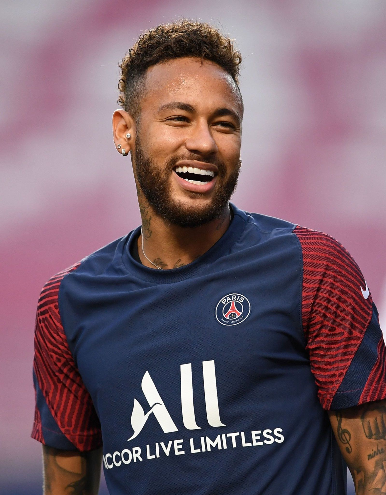

Cristiano Ronaldo
Profesyonel olmadan önce Andorinha, CD Nacional ve son olarak Sporting CP genç takımında oynayan Ronaldo, 17 yaş altı Portekiz millî takımında da dikkat çekmişti. Profesyonel kariyerine yine Sporting CP'da başlayan genç oyuncu, 2003 yılından 2009 yılına kadar Manchester United'da oynadı. 2008-2009 sezonun sonunda Real Madrid kulübüne transfer oldu.

Lionel Messi
Messi, Barcelona forması altındaki ilk maçına 16 Kasım 2003 tarihinde daha 16 yaş 145 günlükken hazırlık maçında Porto'ya karşı çıktı.[35][36] Bundan bir yıl sonra Frank Rijkaard, 16 Ekim 2004 tarihinde Espanyol maçında Messi'ye forma şansı verdi ve Messi, daha 17 yaş 114 günlükken ilk lig maçına çıktı. Messi, böylece La Liga maçına çıkan en genç oyuncu oldu. Bu rekor Eylül 2007'de Bojan Krkić tarafından kırılacaktı. İlk golünü ise 1 Mayıs 2005 tarihinde Albacete'ye karşı 17 yaşında attı. Messi, böylece La Liga'da gol atan en genç Barcelona'lı futbolcu oldu.[37] Ancak, bu rekor 2007 yılında yine Bojan Krkić tarafından Messi'nin asistiyle kırılacaktı.[38] Messi, eski teknik direktörü Rijkaard hakkında: "Ben daha 16 yaşındayken bana güvendi. Benim kariyerimi başlattı. Bu anı hiçbir zaman unutamadım." sözlerini söyledi.
Neymar da Silva Santos Júnior
2009 Campeonato Paulista'da Yılın Genç Futbolcusu ödülünün sahibi olmuştur.[5] 2011 ve 2012 yılında Güney Amerika'da Yılın Futbolcusu seçilmiştir.[6][7] 2011 yılında Santos - Flamengo maçının 26. dakikasında attığı gol, FIFA tarafından 2011 yılının en iyi golü seçilmiştir ve Neymar 2011 FIFA Puskás Ödülü'nün sahibi olmuştur.[8][9][10] 2013 yılında Millî takımıyla almış olduğu FIFA Konfederasyonlar Kupası turnuvasının sonunda Adidas Altın Top ödülüne layık görülmüştür.[11] Bu turnuvada çıktığı 5 maçta (412 dakika) 4 gol atmıştır[12] ve turnuvanın final maçında maçın adamı seçilmiştir.[11]

Son
16 yaşında Hamburg takımı altyapısına katıldı. 18 yaşında bu takımla profesyonel sözleşme imzaladı. Sezon öncesi dönemde geçirdiği sakatlık nedeniyle Ekim ayı sonuna kadar formasından uzak kalmıştır. Dönüş maçında 1. FC Köln takımına karşı 30 Ekim 2010 tarihinde attığı ilk profesyonel golüyle Bundesliga'da gol atan en genç Hamburger SV'li oyuncu unvanını 39 yıldır elinde bulunduran Manfred Kaltz'dan devralmıştır.